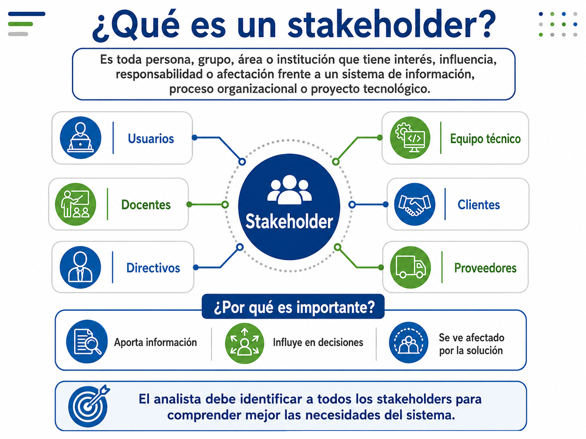
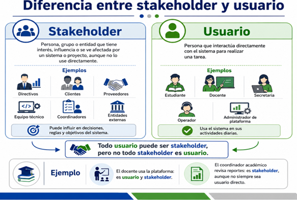
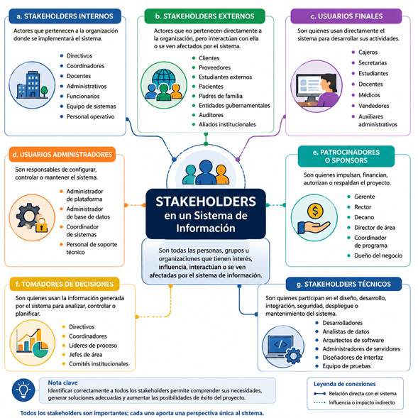

¿Te imaginas intentar organizar la fiesta de graduación de tu colegio preguntándole únicamente al
portero de la entrada? 🧐 ¡Seguramente faltaría la música, la comida o la decoración!
En el desarrollo de software pasa exactamente lo mismo. Antes de escribir una sola línea de código,
es fundamental saber **quiénes están involucrados, quiénes van a usar el sistema y qué necesitan
realmente**. A estas personas, grupos o áreas los llamamos stakeholders (o partes interesadas) y usuarios 💻.
Un buen analista de requerimientos debe actuar como un detective: debe descubrir quiénes son los
actores del proyecto, entrevistar a las personas clave, comprender sus frustraciones cotidianas y
traducir todo eso en requerimientos claros. ¡Esta guía interactiva te enseñará a convertirte en ese
súper detective del software! 🔍
✨¡Tu misión en este OVA! Explora el contenido,
completa las 6 mini-misiones dentro de cada acordeón para ganar Puntos de
Analista y desbloquea insignias hasta convertirte en un Maestro de Requerimientos.
¡Que empiece la aventura! ⭐
🎯 Objetivos de Aprendizaje
Al finalizar esta guía interactiva, serás capaz de:
🔍
Identificar Actores
Identificar los stakeholders y usuarios que intervienen, influyen
o se ven afectados por un sistema de información en un contexto organizacional.
⚖️
Diferenciar Roles y Necesidades
Diferenciar los tipos de actores, usuarios, intereses,
necesidades, problemas y expectativas presentes en un proceso de levantamiento de
información.
📋
Construir Matrices de Análisis
Construir una matriz básica de stakeholders, usuarios y
necesidades como insumo inicial para el análisis y especificación de requerimientos de
un sistema de información.
Tu Nivel de Analista
🏆
🐣 Analista
Novato
¡Completa misiones para subir de rango!
Puntos
Acumulados ⭐
0/ 250 XP
Insignias
Desbloqueadas 🏅
🚀⚖️📂📝🗺️🛡️
Un **stakeholder** es toda persona, grupo, área o entidad que tiene algún tipo de
interés, influencia, responsabilidad o afectación respecto a un sistema de
información o proyecto de software.
En español lo traducimos como **parte interesada** o **actor involucrado**. Los
stakeholders pueden estar dentro o fuera de la organización, y no necesariamente
tienen que tocar o usar el sistema para ser importantes.
💡 ¿Sabías que...? El término proviene del inglés "stake"
(apuesta o parte) y "holder" (poseedor). En el desarrollo de software significa
que son aquellos que tienen algo "en juego" con la creación del sistema.

Diagrama de influencia de stakeholders en el
ciclo del proyecto
🎮
Misión 1El Sabueso de Requisitos (Valor: 30 XP)
Imagina que diseñas una app para reservar
entradas de Cine. Haz click en los actores que realmente consideras
stakeholders de este proyecto (son 4 correctos):
¡Ojo con esto! Aunque a veces se usen como sinónimos, **no son lo mismo**. La regla
de oro es:
"Todo usuario es un stakeholder (porque usa el sistema y se ve afectado), pero no
todo stakeholder es un usuario (algunos influyen o deciden sin tocar el sistema
jamás)."
Usuario: Quien interactúa directamente con el teclado, pantalla
o app (ej: el cajero que escanea productos).
Stakeholder No-Usuario: Quien tiene intereses en el proyecto
pero no lo usa (ej: el dueño del supermercado que quiere reportes financieros, o
el auditor legal).

Relación y límites entre Usuarios y
Stakeholders
🎮
Misión 2Clasificador de Roles (Valor: 40 XP)
Clasifica a los siguientes actores de un **Sistema de
Citas Médicas** seleccionando su rol exacto:
🧑⚕️ Médico que atiende
pacientes en el consultorio
🏥 Director de la clínica (quiere
ver estadísticas de citas)
🏛️ Superintendencia de Salud
(exige cumplimiento de leyes)
Para no volverse loco con tantos actores, los analistas de sistemas clasificamos a
los stakeholders en categorías bien definidas. Las dos principales son:
Internos: Viven dentro de la organización (ej: desarrolladores,
gerentes, empleados operativos).
Externos: Viven fuera de la organización pero se relacionan con
ella (ej: clientes finales, proveedores, entidades gubernamentales).
📊 Estadística Crítica: Según el célebre Standish Group Chaos
Report, casi un 35% de los fracasos de proyectos de
software se deben a una mala comunicación con los stakeholders o a
omitir requisitos de actores técnicos clave.

Clasificación en cuatro cuadrantes de partes
interesadas
🎮
Misión 3Identificación de Entornos (Valor: 35 XP)
¿Puedes identificar si estos stakeholders son
**Internos** o **Externos**?
Empresa proveedora de
pasarela de pagos web
Analista de Control de
Calidad (QA) de la misma empresa
Cuando entrevistas a un stakeholder, esta persona no te dirá los requerimientos técnicos
directamente. Te hablará de sus problemas, de lo que le gustaría y de lo que necesita.
¡Tú debes clasificarlo!
❌ Problema
Lo que duele hoy. "Los reportes se entregan muy
tarde porque se hacen a mano".
⚠️ Necesidad
La meta indispensable. "El director necesita ver
el rendimiento estudiantil a tiempo".
✨ Deseo
Lo que le gustaría pero no es crítico. "Quiero que
el fondo cambie a color pastel".
📝 Requerimiento
La solución técnica del sistema. "El sistema debe
generar un reporte en PDF de forma automática cada viernes".
🎮
Misión 4Filtro de Expresiones (Valor: 45 XP)
Clasifica esta frase del cliente: "A veces
perdemos ventas porque no sabemos qué productos quedan en bodega."
La **Matriz Poder e Interés** es el mapa del tesoro del analista de requerimientos. Nos
permite saber a quién debemos escuchar de forma prioritaria y a quién simplemente
mantener informado.
Cruzando el **Poder** (la autoridad de tomar decisiones o recortar presupuesto) y el
**Interés** (cuánto le importa o afecta el sistema en su vida diaria), creamos 4
estrategias de gestión.
🎮
Misión 5Simulador de Matriz de Poder e Interés (Valor: 60
XP)
Ubica el cuadrante correcto para cada actor en un
proyecto escolar (selecciona de la lista):
🧑🏫 Coordinador Académico
(Líder y autor del sistema)
🎒 Estudiante final (quien subirá
tareas)
🏛️ Rector de la Universidad
(firmó presupuesto general y delegó)
Levantar requerimientos es un arte, y hay trampas clásicas que debes evitar a toda
costa:
Omitir actores técnicos: No hablar con el administrador de bases de
datos, perdiendo de vista restricciones del sistema.
Consultar solo al jefe: El gerente conoce la visión, pero no la
operación real del día a día.
Confundir deseos con necesidades: Implementar adornos innecesarios
en vez de solucionar el problema base.
No documentar conflictos: Ignorar que el área de ventas quiere
facilidad de acceso y seguridad quiere tokens de 3 pasos.
🎮
Misión 6Toma de Decisiones (Valor: 40 XP)
El gerente te dice: "No entrevistes a los
operadores de caja, yo conozco el proceso de memoria y te diré qué hacer." ¿Qué
haces?
✍️ Actividades de Aprendizaje
📚 Actividad 1: Identificación y clasificación de stakeholders
Selecciona uno de los siguientes contextos organizacionales cotidianos:
📚 Préstamo de libros de
Biblioteca🏥 Gestión de citas médicas🛒 Control de inventarios en
tienda
Describe brevemente el proceso y redacta un reporte en tu cuaderno identificando y
clasificando al menos **8 stakeholders** indicando por qué deben ser consultados.
📝 Producto esperado: Documento o reporte escrito
detallando el proceso y la justificación de cada actor.
🛠️ Actividad 2: Generador Interactivo de Matrices
¡Construye tu primera matriz de stakeholders aquí mismo! Añade filas para tu caso de
estudio, clasifícalos y copia la información directamente para tus entregables.
Stakeholder
Tipo
Problema Actual
Necesidad
Influencia
Interés
Acción
¡Matriz
copiada al portapapeles en formato Markdown!
🧠 Actividad 3: Clasificador de expresiones
El analista debe discernir entre lo que el usuario expresa libremente y cómo clasificarlo
técnicamente. Prueba tus habilidades arrastrando o asignando el tipo de expresión correcto:
"El sistema debe exportar los
reportes en formato Excel (.xlsx)"
"Me gustaría que el sistema tuviera
botones redondos y morados"
"Los reportes se elaboran manualmente
y siempre se entregan tarde"
✔️ Evaluación del Tema
¿Estás listo para poner a prueba tus conocimientos en
requerimientos? 🧠
Reglas de la Evaluación:
5 preguntas de selección múltiple.
Dificultad progresiva.
⏳ Temporizador de 3 minutos para todo el test.
¡Necesitas al menos 60% para aprobar!
Evaluación Interactiva
⏳03:00
📖 Recursos para profundizar
Para ampliar tu conocimiento sobre el
levantamiento de información y modelado de requerimientos, te recomendamos explorar los siguientes
recursos:
IIBA - Guía de Stakeholders
Explora la guía oficial de perfiles e identificación
del International Institute of Business Analysis (IIBA).
International Institute of Business Analysis. (2015). Lista, mapa o perfiles de stakeholders
(Stakeholder list, map, or personas). En BABOK Guide KnowledgeHub (3.ª ed.). IIBA.
IEEE Computer Society. (2024). Guía del cuerpo de conocimiento de ingeniería de software
(SWEBOK Guide), versión 4.0. IEEE Computer Society.
Valacich, J. S., & George, J. F. (2021). Análisis y diseño de sistemas modernos (9.ª
ed.). Pearson.
Sommerville, I. (2016). Ingeniería de software (10.ª ed.). Pearson.
Pressman, R. S., & Maxim, B. R. (2020). Ingeniería del software: Un enfoque práctico
(9.ª ed.). McGraw-Hill Education.